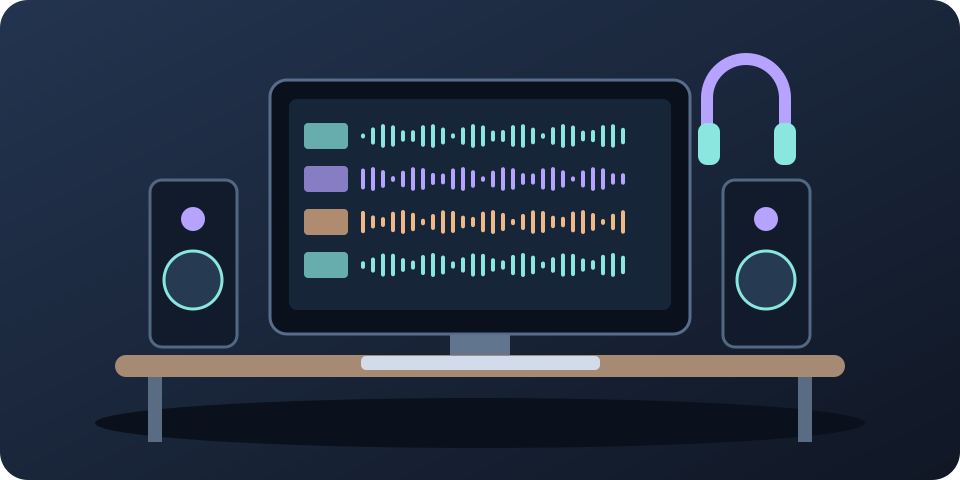

Подготовь записи
Дай дорожкам понятные названия, убери лишние шумы и паузы. Сохрани копию проекта.
Сведение музыки
Сведение — это настройка громкости, тембра и расположения отдельных записей, чтобы они звучали как одна песня.

Дай дорожкам понятные названия, убери лишние шумы и паузы. Сохрани копию проекта.
Сначала сделай так, чтобы голос и инструменты были хорошо слышны без эффектов.
Убери мешающий гул или резкость эквалайзером — инструментом для изменения низких, средних и высоких частот.
Если отдельные слова или удары слишком громкие, используй компрессор. Он уменьшает перепады уровня.
Немного реверберации создаёт ощущение комнаты. Эхо добавляй так, чтобы слова оставались понятными.
Послушай песню в наушниках, на колонках и телефоне. Проверь звучание в одном канале.
Выбери формат файла по задаче, сохрани и прослушай полученный файл от начала до конца.
Дай слуху отдохнуть. Запиши несколько конкретных правок вместо бесконечной смены эффектов.
Если индикатор уровня доходит до предела и звук искажается, уменьши громкость. Оставь небольшой запас для дальнейшей обработки.
| Что проверяем | Что сделать | Зачем |
|---|---|---|
| Каждую запись | Убрать щелчки, лишние паузы и шумы | Чистый исходный звук |
| Громкость дорожек | Снизить слишком громкие сигналы | Избежать искажений |
| Совместное звучание | Слушать все инструменты вместе | Услышать, что мешает голосу |
| Готовый файл | Прослушать после сохранения | Не пропустить ошибку |